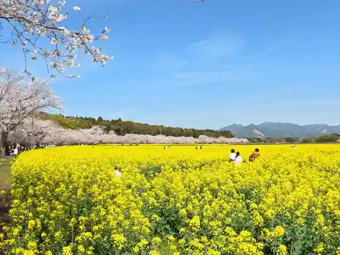
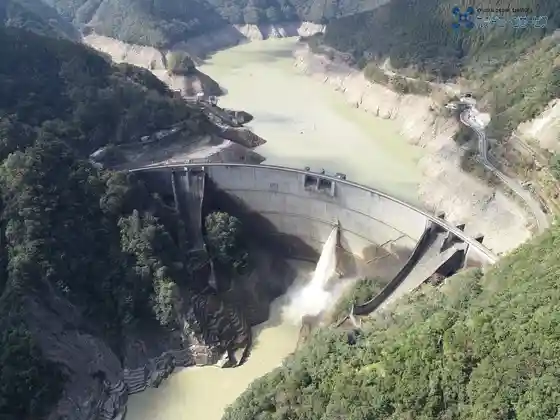

Saito Hara Kofun Gun
Saito, Miyazaki · 0983-42-0024 · Official / source link

Ichi Tsu Se Dam
Saito, Miyazaki · 0985-26-9007 · Official / source link

Tsuma Shrine
Saito, Miyazaki · 0983-43-1238 · Official / source link
Miyazaki Prefectural Saito Hara Koko Museum
Saito, Miyazaki · 0983-41-0041 · Official / source link
Saito Hara Sports Park (Yakyujo)
Saito, Miyazaki · 0983-43-3478 · Official / source link
Ginkyo Shrine
Saito, Miyazaki · 0983-41-1557 · Official / source link
Saito Hara Gaidansu Center (Ko no Hana Kan)
Saito, Miyazaki · 0983-43-6230 · Official / source link
Saito Shimizu Dai General Park
Saito, Miyazaki · 0983-43-3478 · Official / source link
Saito Hara Sports Park (Rikujokyogijo)
Saito, Miyazaki · 0983-43-3478 · Official / source link
Saito Hara Sports Park (Tenisukoto)
Saito, Miyazaki · 0983-43-3478 · Official / source link
Saito Nishichiku Undojo
Saito, Miyazaki · 0983-43-3478 · Official / source link
Saito Tami Gym
Saito, Miyazaki · 0983-43-3478 · Official / source link
Okunai Renshujo (Saito Hara Sports Park)
Saito, Miyazaki · 0983-43-3478 · Official / source link